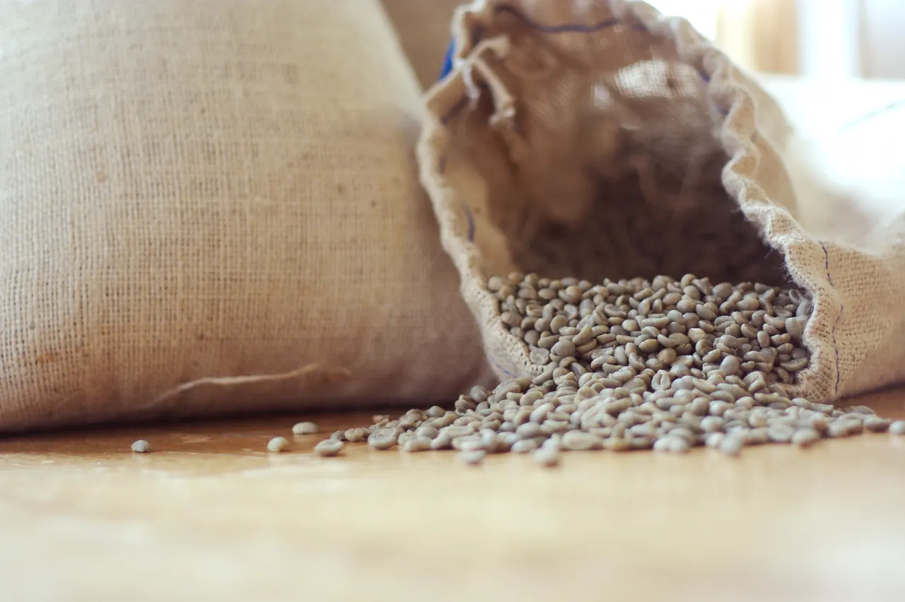

Origin
Coffee is the seed of a cherry. Picked, washed and dried, it is green, dense and smells of fresh hay.
It is sorted by hand before it travels, because a handful of faulty beans can flatten a whole batch.
Demo shop. Nothing is charged.Demo shop. No payment is taken and no card details leave your browser.
Single-origin coffee roasters
Six single-origin coffees, roasted in small batches and sold whole or ground. 250 g from €11.50.

Open a coffee, choose whole bean, espresso or filter, and see the grind you will get.
Coffee is the seed of a cherry. Picked, washed and dried, it is green, dense and smells of fresh hay.
It is sorted by hand before it travels, because a handful of faulty beans can flatten a whole batch.
About twelve minutes in the drum turn a grassy seed into coffee. Keep scrolling and watch the colour change.


The last step is yours. For a clean filter cup, start here and adjust to taste.